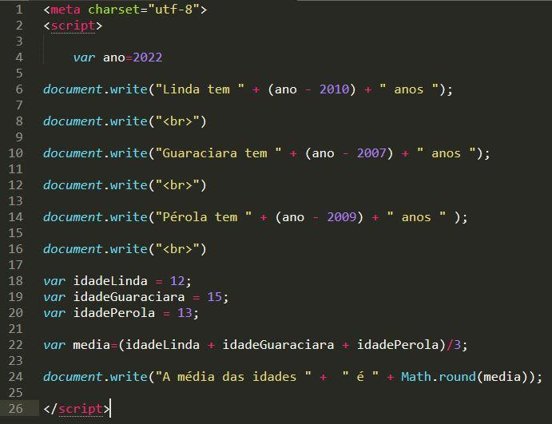

JavaScript (1995)
JavaScript, criado em 1995 por Brendan Eich, é uma linguagem de programação de alto nível, o JavaScript foi criado com o objetivo de adicionar interatividade aos sites, interpretada e orientada a objetos. É amplamente utilizada para adicionar interatividade e dinamismo aos sites, permitindo que os desenvolvedores criem funcionalidades avançadas, como validação de formulários, animações, manipulação de elementos HTML, comunicação com servidores, entre outros.
Além disso, o JavaScript possui uma sintaxe flexível e recursos poderosos, como funções de primeira classe, closures e suporte a programação assíncrona com Promises e async/await. Esses recursos permitem que os desenvolvedores escrevam código conciso e eficiente, lidando com tarefas síncronas e assíncronas de forma eficaz.

Em resumo, o JavaScript desempenha um papel fundamental no desenvolvimento web moderno, permitindo a criação de sites e aplicações interativas, responsivas e dinâmicas. Sua versatilidade e popularidade o tornaram uma das linguagens mais utilizadas no desenvolvimento front-end e back-end.
Atividade desenvolvida como extensão no projeto
PACEX/Mundo Tech do curso de análise e Desenvolvimento de Sistemas
Unipar - Cascavel